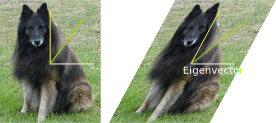
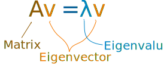

Eigenvector and Eigenvalue
They have many uses!
A simple example is that an eigenvector does not change direction in a transformation:

How do we find that vector?
The Mathematics Of It
For a square matrix A, an Eigenvector and Eigenvalue make this equation true:

Let us see it in action:
Example: For this matrix
−6
3
4
5
an eigenvector is
1
4
with a matching eigenvalue of 6
Let's do some matrix multiplies to see if that is true.
Av gives us:
λv gives us :
Yes they are equal!
So we get Av = λv as promised.
Notice how we multiply a matrix by a vector and get the same result as when we multiply a scalar (just a number) by that vector.
How do we find these eigen things?
We start by finding the eigenvalue. We know this equation must be true:
Av = λv
Next we put in an identity matrix so we are dealing with matrix-vs-matrix:
Av = λIv
Bring all to left hand side:
Av − λIv = 0
If v is non-zero then we can (hopefully) solve for λ using just the determinant:
| A − λI | = 0
Let's try that equation on our previous example:
Example: Solve for λ
Start with | A − λI | = 0
|
| |
−6
3
4
5
− λ
1
0
0
1
|
| |
= 0 |
Which is:
Calculating that determinant gets:
(−6−λ)(5−λ) − 3×4 = 0
Which simplifies to this Quadratic Equation:
λ2 + λ − 42 = 0
And solving it gets:
λ = −7 or 6
And yes, there are two possible eigenvalues.
Now we know eigenvalues, let us find their matching eigenvectors.
Example (continued): Find the Eigenvector for the Eigenvalue λ = 6:
Start with:
Av = λv
Put in the values we know:After multiplying we get these two equations:
| −6x + 3y | = | 6x |
| 4x + 5y | = | 6y |
Bringing all to left hand side:
| −12x + 3y | = | 0 |
| 4x − 1y | = | 0 |
Either equation reveals that y = 4x, so the eigenvector is any non-zero multiple of this:
And we get the solution shown at the top of the page:
... and also ...
So Av = λv, and we have success!
Now it is your turn to find the eigenvector for the other eigenvalue of −7
Why?
What is the purpose of these?
One of the cool things is we can use matrices to do transformations in space, which is used a lot in computer graphics.
In that case the eigenvector is "the direction that doesn't change direction" !
And the eigenvalue is the scale of the stretch:
- 1 means no change,
- 2 means doubling in length,
- −1 means pointing backwards along the eigenvalue's direction
- etc
There are also many applications in physics, etc.
Why "Eigen"
Eigen is a German word meaning "own" or "typical"
"das ist ihnen eigen" is German for "that is typical of them"
Sometimes in English we use the word "characteristic", so an eigenvector can be called a "characteristic vector".
Not Just Two Dimensions
Eigenvectors work perfectly well in 3 and higher dimensions.
Example: find the eigenvalues for this 3x3 matrix:
2
0
0
0
4
5
0
4
3
First calculate A − λI:
Now the determinant should equal zero:
Which is:
(2−λ) [ (4−λ)(3−λ) − 5×4 ] = 0
This ends up being a cubic equation, but just looking at it here we see one of the roots is 2 (because of 2−λ), and the part inside the square brackets is Quadratic, with roots of −1 and 8.
So the Eigenvalues are −1, 2 and 8
Example (continued): find the Eigenvector that matches the Eigenvalue −1
Put in the values we know:
After multiplying we get these equations:
| 2x | = | −x |
| 4y + 5z | = | −y |
| 4y + 3z | = | −z |
Bringing all to left hand side:
| 3x | = | 0 |
| 5y + 5z | = | 0 |
| 4y + 4z | = | 0 |
So x = 0, and y = −z and so the eigenvector is any non-zero multiple of this:
TEST Av:
And λv:
So Av = λv, yay!
(You can try your hand at the eigenvalues of 2 and 8)
Rotation
Back in the 2D world again, this matrix will do a rotation by θ:
Example: Rotate by 30°
cos(30°) = √32 and sin(30°) = 12, so:
But if we rotate all points, what is the "direction that doesn't change direction"?

Let us work through the mathematics to find out:
First calculate A − λI:
Now the determinant should equal zero:
Which is:
(√32−λ)(√32−λ) − (−12)(12) = 0
Which becomes this Quadratic Equation:
λ2 − (√3)λ + 1 = 0
Whose roots are:
λ = √32 ± i2
The eigenvalues are complex!
I don't know how to show you that on a graph, but we still get a solution.
Eigenvector
So, what is an eigenvector that matches, say, the √32 + i2 root?
Start with:
Av = λv
Put in the values we know:After multiplying we get these two equations:
√32x − 12y = √32x + i2x
12x + √32y = √32y + i2y
Which simplify to:
−y = ix
x = iy
And the solution is any non-zero multiple of:
or
Wow, such a simple answer!
Is this just because we chose 30°? Or does it work for any rotation matrix? I will let you work that out! Try another angle, or better still use "cos(θ)" and "sin(θ)".
Oh, and let us check at least one of those solutions:
Does it match this?
Oh yes it does!